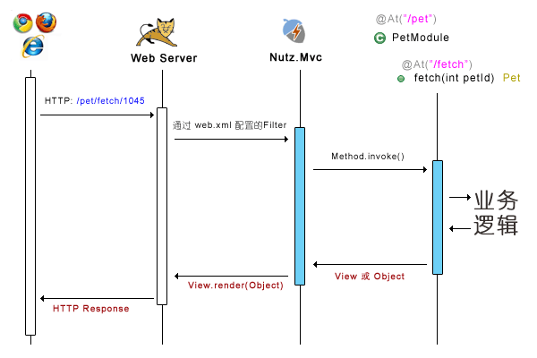

几句话的介绍
Nutz.Mvc 是要和一个 Web 服务器 （比如 Tomcat）一起工作的，它存在的意义就是要把一个标准的 HTTP 请求，转发到某一个 Java 函数中。
它的特点是：
- 帮你做参数的解析 （当然你自己可以随意扩展）
- 如果你愿意，你可以不用 View 来渲染 HTTP 输出流
- 提供几个基本的渲染方式 （比如 JSP, JSON）
- 除此以外，不内置更多的功能
每一种 HTTP 请求，标识就是一个 URL，而每一个 Java 函数怎样和一个 URL 关联呢？ 最直接的办法就是在函数上声明一个注解，这个注解，在 Nutz.Mvc 中，叫 @At
你如果想快速开始，来一个 Hellow World， 那么请看 Hello World 一节
图解 Nutz.Mvc
为了能让你更快速直观的了解 Nutz.Mvc 的工作方式，我提供下面两张图：
每一次请求，都经过如下流程

Nutz.Mvc 根据 @At 注解，将一个 HTTP 请求映射到了一个函数，函数只有一个参数，会被路径参数 （1045） 填充。
- Nutz.Mvc 最基本的想法，就是通过注解 @At 将一个HTTP请求路径同一个 Java 函数关联起来。
- 并且，@At 支持你写多个路径
更详细的流程

- 声明了 @At 的函数被称为 入口函数
- 任何一个请求，都会经过四道工序
- A - 过滤: 你通过 @Filters 注解可以为你的入口函数定义任意多的过滤器
- B - 适配: 这个过程将 HTTP 输入流转换成入口函数的参数数组
- 默认的，它认为输入流是传统的名值对方式
- 更多的适配方式请参看 关于适配器
- 文件上传也是一种适配方式，请参看 UploadAdptor
- C - 调用: 调用入口函数，你在里面需要调用相关的业务层代码。
- 如果你的业务比较复杂，为了解耦合，你可能需要 Ioc 容器的帮助，请参看 同 Ioc 容器一起工作 一节
- D - 渲染: 根据入口函数的返回，渲染 HTTP Response。
- 如果返回是个 View，则用这个 View 来渲染 null （null? 是的，你没看错，这种情况 View 接口第三个参数会是 null）
- 你可以用 org.nutz.mvc.view.ViewWrapper 将你的返回对象以及要返回的视图组合在一起返回，ViewWrapper 也是一个 View
- 否则用函数的 @Ok 注解声明的 View 来渲染入口函数的返回对象
- 如果你的函数处理过程中抛出了异常，用 @Error 注解声明的 View 来渲染异常对象
- 返回值会保存在request的attr中,名字是obj
- 如果返回是个 View，则用这个 View 来渲染 null （null? 是的，你没看错，这种情况 View 接口第三个参数会是 null）